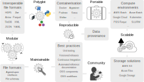

5 Workflows
Single-cell analysis has revolutionized our understanding of cellular heterogeneity and complex biological processes. However, this cutting-edge field often demands the use of multiple programming languages and frameworks, each with its strengths and specialized tools (Heumos et al. 2023). This polyglot approach, while powerful, introduces significant technical challenges in terms of interoperability, usability, and reproducibility.
In the previous chapters, we’ve explored strategies for supporting data operability across programming language. Now, we turn our attention to how to effectively integrate these tools and languages into a cohesive and scalable analysis workflow.
5.1 Productionization
Productionization is the process of transforming research-oriented analysis pipelines into robust, scalable, and maintainable workflows that can be reliably executed in a production environment (Figure 5.1). This transition is essential for ensuring the reproducibility of results, facilitating collaboration among researchers, and enabling the efficient processing of large and complex single-cell datasets.

But how to ensure that your workflow is production-ready?
In this chapter, we will explore:
- Key qualities of workflows built to stand the test of time
- Which technologies and workflow frameworks contribute to these qualities
- Best practices to keep in mind during development
5.2 Review of Workflow Frameworks
A lot of different workflow frameworks exist, and there are a lot of factors to consider when choosing the right one for your project. Wratten, Wilm, and Göke (2021) conducted a review of popular workflow managers for bioinformatics, evaluating them based on several key aspects, including ease of use, expressiveness, portability, scalability, and learning resources (Table 5.1).
| Tool | Class | Ease of use | Expressiveness | Portability | Scalability | Learning resources | Pipeline initiatives |
|---|---|---|---|---|---|---|---|
| Galaxy | Graphical | ●●● | ●○○ | ●●● | ●●● | ●●● | ●●○ |
| KNIME | Graphical | ●●● | ●○○ | ○○○ | ●●◐ | ●●● | ●●○ |
| Nextflow | DSL | ●●○ | ●●● | ●●● | ●●● | ●●● | ●●● |
| Snakemake | DSL | ●●○ | ●●● | ●●◐ | ●●● | ●●○ | ●●● |
| GenPipes | DSL | ●●○ | ●●● | ●●○ | ●●○ | ●●○ | ●●○ |
| bPipe | DSL | ●●○ | ●●● | ●●○ | ●●◐ | ●●○ | ●○○ |
| Pachyderm | DSL | ●●○ | ●●● | ●○○ | ●●○ | ●●● | ○○○ |
| SciPipe | Library | ●●○ | ●●● | ○○○ | ○○○ | ●●○ | ○○○ |
| Luigi | Library | ●●○ | ●●● | ●○○ | ●●◐ | ●●○ | ○○○ |
| Cromwell + WDL | Execution + workflow specification | ●○○ | ●●○ | ●●● | ●●◐ | ●●○ | ●●○ |
| cwltool + CWL | Execution + workflow specification | ●○○ | ●●○ | ●●◐ | ○○○ | ●●● | ●●○ |
| Toil + CWL/WDL/Python | Execution + workflow specification | ●○○ | ●●● | ●◐○ | ●●● | ●●○ | ●●○ |
Even more interesting is the accompanying GitHub repository (GoekeLab/bioinformatics-workflows), which contains a Proof of Concept (PoC) RNA-seq workflow implemented in the different workflow frameworks. These implementations were contributed and reviewed by the developers of the respective frameworks themselves!

Looking at these implementations, at first glance, one would think that the differences between the frameworks are minimal, and that the choice of framework is mostly a matter of personal preference.
5.2.1 Comparing PoC Workflows to Community-Made Modules
However, comparing the POC workflows (left) to community-made modules (right), it becomes clear that creating production-ready components requires a lot more than specifying a command’s input and output files.
5.2.1.1 Nextflow
Wratten et al. 2021 PoC (Source):
process FASTQC {
publishDir params.outdir
input:
path index
path left
path right
output:
path 'qc'
"""
mkdir qc && fastqc --quiet '${params.left}' '${params.right}' --outdir qc
"""
}nf-core (Source):
channels:
- conda-forge
- bioconda
dependencies:
- bioconda::fastqc=0.12.1process FASTQC {
tag "$meta.id"
label 'process_medium'
conda "${moduleDir}/environment.yml"
container "${ workflow.containerEngine == 'singularity' && !task.ext.singularity_pull_docker_container ?
'https://depot.galaxyproject.org/singularity/fastqc:0.12.1--hdfd78af_0' :
'biocontainers/fastqc:0.12.1--hdfd78af_0' }"
input:
tuple val(meta), path(reads)
output:
tuple val(meta), path("*.html"), emit: html
tuple val(meta), path("*.zip") , emit: zip
path "versions.yml" , emit: versions
when:
task.ext.when == null || task.ext.when
script:
def args = task.ext.args ?: ''
def prefix = task.ext.prefix ?: "${meta.id}"
// Make list of old name and new name pairs to use for renaming in the bash while loop
def old_new_pairs = reads instanceof Path || reads.size() == 1 ? [[ reads, "${prefix}.${reads.extension}" ]] : reads.withIndex().collect { entry, index -> [ entry, "${prefix}_${index + 1}.${entry.extension}" ] }
def rename_to = old_new_pairs*.join(' ').join(' ')
def renamed_files = old_new_pairs.collect{ old_name, new_name -> new_name }.join(' ')
// The total amount of allocated RAM by FastQC is equal to the number of threads defined (--threads) time the amount of RAM defined (--memory)
// https://github.com/s-andrews/FastQC/blob/1faeea0412093224d7f6a07f777fad60a5650795/fastqc#L211-L222
// Dividing the task.memory by task.cpu allows to stick to requested amount of RAM in the label
def memory_in_mb = MemoryUnit.of("${task.memory}").toUnit('MB') / task.cpus
// FastQC memory value allowed range (100 - 10000)
def fastqc_memory = memory_in_mb > 10000 ? 10000 : (memory_in_mb < 100 ? 100 : memory_in_mb)
"""
printf "%s %s\\n" $rename_to | while read old_name new_name; do
[ -f "\${new_name}" ] || ln -s \$old_name \$new_name
done
fastqc \\
$args \\
--threads $task.cpus \\
--memory $fastqc_memory \\
$renamed_files
cat <<-END_VERSIONS > versions.yml
"${task.process}":
fastqc: \$( fastqc --version | sed '/FastQC v/!d; s/.*v//' )
END_VERSIONS
"""
stub:
def prefix = task.ext.prefix ?: "${meta.id}"
"""
touch ${prefix}.html
touch ${prefix}.zip
cat <<-END_VERSIONS > versions.yml
"${task.process}":
fastqc: \$( fastqc --version | sed '/FastQC v/!d; s/.*v//' )
END_VERSIONS
"""
}name: fastqc
description: Run FastQC on sequenced reads
keywords:
- quality control
- qc
- adapters
- fastq
tools:
- fastqc:
description: |
FastQC gives general quality metrics about your reads.
It provides information about the quality score distribution
across your reads, the per base sequence content (%A/C/G/T).
You get information about adapter contamination and other
overrepresented sequences.
homepage: https://www.bioinformatics.babraham.ac.uk/projects/fastqc/
documentation: https://www.bioinformatics.babraham.ac.uk/projects/fastqc/Help/
licence: ["GPL-2.0-only"]
input:
- meta:
type: map
description: |
Groovy Map containing sample information
e.g. [ id:'test', single_end:false ]
- reads:
type: file
description: |
List of input FastQ files of size 1 and 2 for single-end and paired-end data,
respectively.
output:
- meta:
type: map
description: |
Groovy Map containing sample information
e.g. [ id:'test', single_end:false ]
- html:
type: file
description: FastQC report
pattern: "*_{fastqc.html}"
- zip:
type: file
description: FastQC report archive
pattern: "*_{fastqc.zip}"
- versions:
type: file
description: File containing software versions
pattern: "versions.yml"
authors:
- "@drpatelh"
- "@grst"
- "@ewels"
- "@FelixKrueger"
maintainers:
- "@drpatelh"
- "@grst"
- "@ewels"
- "@FelixKrueger"nextflow_process {
name "Test Process FASTQC"
script "../main.nf"
process "FASTQC"
tag "modules"
tag "modules_nfcore"
tag "fastqc"
test("sarscov2 single-end [fastq]") {
when {
process {
"""
input[0] = Channel.of([
[ id: 'test', single_end:true ],
[ file(params.modules_testdata_base_path + 'genomics/sarscov2/illumina/fastq/test_1.fastq.gz', checkIfExists: true) ]
])
"""
}
}
then {
assertAll (
{ assert process.success },
// NOTE The report contains the date inside it, which means that the md5sum is stable per day, but not longer than that. So you can't md5sum it.
// looks like this: <div id="header_filename">Mon 2 Oct 2023<br/>test.gz</div>
// https://github.com/nf-core/modules/pull/3903#issuecomment-1743620039
{ assert process.out.html[0][1] ==~ ".*/test_fastqc.html" },
{ assert process.out.zip[0][1] ==~ ".*/test_fastqc.zip" },
{ assert path(process.out.html[0][1]).text.contains("<tr><td>File type</td><td>Conventional base calls</td></tr>") },
{ assert snapshot(process.out.versions).match() }
)
}
}
/* The rest of the tests are omitted */
}5.2.1.2 Snakemake
Wratten et al. 2021 PoC (Source):
rule fastqc:
input:
get_fastqs,
output:
directory("results/fastqc/{sample}"),
log:
"logs/fastqc/{sample}.log",
conda:
"envs/fastqc.yaml"
params:
"--quiet --outdir",
shell:
"mkdir {output}; fastqc {input} {params} {output} 2> {log}"snakemake-wrappers (Source):
channels:
- conda-forge
- bioconda
- nodefaults
dependencies:
- fastqc =0.12.1
- snakemake-wrapper-utils =0.6.2name: fastqc
description: |
Generate fastq qc statistics using fastqc.
url: https://github.com/s-andrews/FastQC
authors:
- Julian de Ruiter
input:
- fastq file
output:
- html file containing statistics
- zip file containing statistics"""Snakemake wrapper for fastqc."""
__author__ = "Julian de Ruiter"
__copyright__ = "Copyright 2017, Julian de Ruiter"
__email__ = "julianderuiter@gmail.com"
__license__ = "MIT"
from os import path
import re
from tempfile import TemporaryDirectory
from snakemake.shell import shell
from snakemake_wrapper_utils.snakemake import get_mem
extra = snakemake.params.get("extra", "")
log = snakemake.log_fmt_shell(stdout=True, stderr=True)
# Define memory per thread (https://github.com/s-andrews/FastQC/blob/master/fastqc#L201-L222)
mem_mb = int(get_mem(snakemake, "MiB") / snakemake.threads)
def basename_without_ext(file_path):
"""Returns basename of file path, without the file extension."""
base = path.basename(file_path)
# Remove file extension(s) (similar to the internal fastqc approach)
base = re.sub("\\.gz$", "", base)
base = re.sub("\\.bz2$", "", base)
base = re.sub("\\.txt$", "", base)
base = re.sub("\\.fastq$", "", base)
base = re.sub("\\.fq$", "", base)
base = re.sub("\\.sam$", "", base)
base = re.sub("\\.bam$", "", base)
return base
# If you have multiple input files fastqc doesn't know what to do. Taking silently only first gives unapreciated results
if len(snakemake.input) > 1:
raise IOError("Got multiple input files, I don't know how to process them!")
# Run fastqc, since there can be race conditions if multiple jobs
# use the same fastqc dir, we create a temp dir.
with TemporaryDirectory() as tempdir:
shell(
"fastqc"
" --threads {snakemake.threads}"
" --memory {mem_mb}"
" {extra}"
" --outdir {tempdir:q}"
" {snakemake.input[0]:q}"
" {log}"
)
# Move outputs into proper position.
output_base = basename_without_ext(snakemake.input[0])
html_path = path.join(tempdir, output_base + "_fastqc.html")
zip_path = path.join(tempdir, output_base + "_fastqc.zip")
if snakemake.output.html != html_path:
shell("mv {html_path:q} {snakemake.output.html:q}")
if snakemake.output.zip != zip_path:
shell("mv {zip_path:q} {snakemake.output.zip:q}")rule fastqc:
input:
"reads/{sample}.fastq"
output:
html="qc/fastqc/{sample}.html",
zip="qc/fastqc/{sample}_fastqc.zip" # the suffix _fastqc.zip is necessary for multiqc to find the file. If not using multiqc, you are free to choose an arbitrary filename
params:
extra = "--quiet"
log:
"logs/fastqc/{sample}.log"
threads: 1
resources:
mem_mb = 1024
wrapper:
"master/bio/fastqc"5.2.1.3 Toil + WDL
Wratten et al. 2021 PoC (Source):
task FastQCone {
input {
File reads
}
command {
zcat "${reads}" | fastqc stdin:readsone
}
output {
File fastqc_res = "readsone_fastqc.html"
}
runtime {
docker: 'pegi3s/fastqc'
}
}BioWDL (Source):
version 1.0
# ... license ...
task Fastqc {
input {
File seqFile
String outdirPath
Boolean casava = false
## ... other arguments ...
# Set javaXmx a little high.
String javaXmx="1750M"
Int threads = 1
String memory = "2GiB"
Int timeMinutes = 1 + ceil(size(seqFile, "G")) * 4
String dockerImage = "quay.io/biocontainers/fastqc:0.12.1--hdfd78af_0"
Array[File]? noneArray
File? noneFile
}
# Chops of the .gz extension if present.
String name = basename(sub(seqFile, "\.gz$",""))
# This regex chops of the extension just as fastqc does it.
String reportDir = outdirPath + "/" + sub(name, "\.[^\.]*$", "_fastqc")
# We reimplement the perl wrapper here. This has the advantage that it
# gives us more control over the amount of memory used.
command <<<
set -e
mkdir -p "~{outdirPath}"
FASTQC_DIR="/usr/local/opt/fastqc-0.12.1"
export CLASSPATH="$FASTQC_DIR:$FASTQC_DIR/sam-1.103.jar:$FASTQC_DIR/jbzip2-0.9.jar:$FASTQC_DIR/cisd-jhdf5.jar"
java -Djava.awt.headless=true -XX:ParallelGCThreads=1 \
-Xms200M -Xmx~{javaXmx} \
~{"-Dfastqc.output_dir=" + outdirPath} \
~{true="-Dfastqc.casava=true" false="" casava} \
# ... other arguments ...
~{"-Dfastqc.kmer_size=" + kmers} \
~{"-Djava.io.tmpdir=" + dir} \
uk.ac.babraham.FastQC.FastQCApplication \
~{seqFile}
>>>
output {
File htmlReport = reportDir + ".html"
File reportZip = reportDir + ".zip"
File? summary = if extract then reportDir + "/summary.txt" else noneFile
File? rawReport = if extract then reportDir + "/fastqc_data.txt" else noneFile
Array[File]? images = if extract then glob(reportDir + "/Images/*.png") else noneArray
}
runtime {
cpu: threads
memory: memory
time_minutes: timeMinutes
docker: dockerImage
}
parameter_meta {
# inputs
seqFile: {description: "A fastq file.", category: "required"}
outdirPath: {description: "The path to write the output to.", catgory: "required"}
# ... other arguments ...
dockerImage: {description: "The docker image used for this task. Changing this may result in errors which the developers may choose not to address.", category: "advanced"}
# outputs
htmlReport: {description: "HTML report file."}
reportZip: {description: "Source data file."}
summary: {description: "Summary file."}
rawReport: {description: "Raw report file."}
images: {description: "Images in report file."}
}
meta {
WDL_AID: {
exclude: ["noneFile", "noneArray"]
}
}
}version 1.0
# Copyright (c) 2017 Leiden University Medical Center
#
# Permission is hereby granted, free of charge, to any person obtaining a copy
# of this software and associated documentation files (the "Software"), to deal
# in the Software without restriction, including without limitation the rights
# to use, copy, modify, merge, publish, distribute, sublicense, and/or sell
# copies of the Software, and to permit persons to whom the Software is
# furnished to do so, subject to the following conditions:
#
# The above copyright notice and this permission notice shall be included in
# all copies or substantial portions of the Software.
#
# THE SOFTWARE IS PROVIDED "AS IS", WITHOUT WARRANTY OF ANY KIND, EXPRESS OR
# IMPLIED, INCLUDING BUT NOT LIMITED TO THE WARRANTIES OF MERCHANTABILITY,
# FITNESS FOR A PARTICULAR PURPOSE AND NONINFRINGEMENT. IN NO EVENT SHALL THE
# AUTHORS OR COPYRIGHT HOLDERS BE LIABLE FOR ANY CLAIM, DAMAGES OR OTHER
# LIABILITY, WHETHER IN AN ACTION OF CONTRACT, TORT OR OTHERWISE, ARISING FROM,
# OUT OF OR IN CONNECTION WITH THE SOFTWARE OR THE USE OR OTHER DEALINGS IN THE
# SOFTWARE.
task Fastqc {
input {
File seqFile
String outdirPath
Boolean casava = false
Boolean nano = false
Boolean noFilter = false
Boolean extract = false
Boolean nogroup = false
Int? minLength
String? format
File? contaminants
File? adapters
File? limits
Int? kmers
String? dir
# Set javaXmx a little high. Equal to fastqc default with 7 threads.
# This is because some fastq files need more memory. 2G per core
# is a nice cluster default, so we use all the rest of the memory for
# fastqc so we should have as little OOM crashes as possible even with
# weird edge case fastq's.
String javaXmx="1750M"
Int threads = 1
String memory = "2GiB"
Int timeMinutes = 1 + ceil(size(seqFile, "G")) * 4
String dockerImage = "quay.io/biocontainers/fastqc:0.12.1--hdfd78af_0"
Array[File]? noneArray
File? noneFile
}
# Chops of the .gz extension if present.
# The Basename needs to be taken here. Otherwise paths might differ
# between similar jobs.
String name = basename(sub(seqFile, "\.gz$",""))
# This regex chops of the extension and replaces it with _fastqc for
# the reportdir.
# Just as fastqc does it.
String reportDir = outdirPath + "/" + sub(name, "\.[^\.]*$", "_fastqc")
# We reimplement the perl wrapper here. This has the advantage that it
# gives us more control over the amount of memory used.
command <<<
set -e
mkdir -p "~{outdirPath}"
FASTQC_DIR="/usr/local/opt/fastqc-0.12.1"
export CLASSPATH="$FASTQC_DIR:$FASTQC_DIR/sam-1.103.jar:$FASTQC_DIR/jbzip2-0.9.jar:$FASTQC_DIR/cisd-jhdf5.jar"
java -Djava.awt.headless=true -XX:ParallelGCThreads=1 \
-Xms200M -Xmx~{javaXmx} \
~{"-Dfastqc.output_dir=" + outdirPath} \
~{true="-Dfastqc.casava=true" false="" casava} \
~{true="-Dfastqc.nano=true" false="" nano} \
~{true="-Dfastqc.nofilter=true" false="" noFilter} \
~{true="-Dfastqc.unzip=true" false="" extract} \
~{true="-Dfastqc.nogroup=true" false="" nogroup} \
~{"-Dfastqc.min_length=" + minLength} \
~{"-Dfastqc.sequence_format=" + format} \
~{"-Dfastqc.threads=" + threads} \
~{"-Dfastqc.contaminant_file=" + contaminants} \
~{"-Dfastqc.adapter_file=" + adapters} \
~{"-Dfastqc.limits_file=" + limits} \
~{"-Dfastqc.kmer_size=" + kmers} \
~{"-Djava.io.tmpdir=" + dir} \
uk.ac.babraham.FastQC.FastQCApplication \
~{seqFile}
>>>
output {
File htmlReport = reportDir + ".html"
File reportZip = reportDir + ".zip"
File? summary = if extract then reportDir + "/summary.txt" else noneFile
File? rawReport = if extract then reportDir + "/fastqc_data.txt" else noneFile
Array[File]? images = if extract then glob(reportDir + "/Images/*.png") else noneArray
}
runtime {
cpu: threads
memory: memory
time_minutes: timeMinutes
docker: dockerImage
}
parameter_meta {
# inputs
seqFile: {description: "A fastq file.", category: "required"}
outdirPath: {description: "The path to write the output to.", catgory: "required"}
casava: {description: "Equivalent to fastqc's --casava flag.", category: "advanced"}
nano: {description: "Equivalent to fastqc's --nano flag.", category: "advanced"}
noFilter: {description: "Equivalent to fastqc's --nofilter flag.", category: "advanced"}
extract: {description: "Equivalent to fastqc's --extract flag.", category: "advanced"}
nogroup: {description: "Equivalent to fastqc's --nogroup flag.", category: "advanced"}
minLength: {description: "Equivalent to fastqc's --min_length option.", category: "advanced"}
format: {description: "Equivalent to fastqc's --format option.", category: "advanced"}
contaminants: {description: "Equivalent to fastqc's --contaminants option.", category: "advanced"}
adapters: {description: "Equivalent to fastqc's --adapters option.", category: "advanced"}
limits: {description: "Equivalent to fastqc's --limits option.", category: "advanced"}
kmers: {description: "Equivalent to fastqc's --kmers option.", category: "advanced"}
dir: {description: "Equivalent to fastqc's --dir option.", category: "advanced"}
javaXmx: {description: "The maximum memory available to the program. Should be lower than `memory` to accommodate JVM overhead.", category: "advanced"}
threads: {description: "The number of cores to use.", category: "advanced"}
memory: {description: "The amount of memory this job will use.", category: "advanced"}
timeMinutes: {description: "The maximum amount of time the job will run in minutes.", category: "advanced"}
dockerImage: {description: "The docker image used for this task. Changing this may result in errors which the developers may choose not to address.", category: "advanced"}
# outputs
htmlReport: {description: "HTML report file."}
reportZip: {description: "Source data file."}
summary: {description: "Summary file."}
rawReport: {description: "Raw report file."}
images: {description: "Images in report file."}
}
meta {
WDL_AID: {
exclude: ["noneFile", "noneArray"]
}
}
}5.2.2 Limitations of the study
However, the Supplementary Table shows that the comparison in Table 5.1 was rather limited, since the score of each category was only based on a single criterion. Of the following categories, only “Scalability” was determined by more than one criterion:
- Ease of Use: Graphical interface with execution environment (score of 3), programming interface with in-built execution environment (score of 2), separated development and execution environment (score of 1).
- Expressiveness: Based on an existing programming language (3) or a new language or restricted vocabulary (2), primary interaction with graphical user interface (1).
- Portability: Integration with three or more container and package manager platforms (3), two platforms are supported (2), one platform is supported (1).
- Scalability: Considers cloud support, scheduler and orchestration tool integration, and executor support. Please refer to Supplementary Table 1 - Sheet 2 (Scalability).
- Learning resources: Official tutorials, forums and events (3), tutorials and forums (2), tutorials or forums (1).
- Pipelines Initiatives: Community and curated (3), community or curated (2), not community or curated (1).
By comparing the example code of the respective workflow frameworks, it also becomes clear that we need not only look at example code of POC workflows, but actual production-ready workflows and pipelines. Such code often require a lot more functionality, including:
- Error handling
- Logging
- Data provenance
- Parameterization
- Testing
- Documentation
- Containerization
- Resource management
5.3 Qualities of a Production-Ready Workflow
Building production-ready workflows for single-cell analysis involves integrating a variety of tools, technologies, and best practices. In order to meet the demands of large-scale data processing, reproducibility, and collaboration, a production-ready workflow should exhibit the following essential qualities (Figure 5.2):

- Polyglot: Seamlessly integrate tools and libraries from different programming languages, allowing you to leverage the strengths of each language for specific tasks. This facilitates the use of specialized tools and optimizes the analysis pipeline for performance and efficiency.
- Modular: A well-structured workflow should be composed of modular and reusable components, promoting code maintainability and facilitating collaboration. Each module should have a clear purpose and well-defined inputs and outputs, enabling easy integration and replacement of individual steps within the pipeline.
- Scalable: Single-cell datasets can be massive, and a production-ready workflow should be able to handle large volumes of data efficiently. This involves utilizing scalable compute environments, optimizing data storage and retrieval, and implementing parallelization strategies to accelerate analysis.
- Reproducible: Ensuring reproducibility is crucial for scientific rigor and validation. A production-ready workflow should capture all the necessary information, including code, data, parameters, and software environments, to enable others to replicate the analysis and obtain consistent results.
- Portable: The workflow should be designed to run seamlessly across different computing platforms and environments, promoting accessibility and collaboration. Containerization technologies like Docker can help achieve portability by encapsulating the workflow and its dependencies into a self-contained unit.
- Community: Leveraging community resources, tools, and best practices can accelerate the development of production-ready workflows. This is because developing high-quality components can at times be time-consuming, and sharing resources can help reduce duplication of effort and promote collaboration.
- Maintainable: A production-ready workflow should be well-documented, organized, and easy to understand, facilitating updates, modifications, and troubleshooting. Clear documentation of code, data, and parameters ensures that the workflow remains accessible and usable over time.
5.4 Technologies for Production-Ready Workflows
The essential qualities of a production-ready workflow are achieved through a combination of enabling technologies (Figure 5.3). These technologies provide the foundation for building scalable, reproducible, and maintainable workflows for single-cell analysis.

5.5 Quality Assessment of Workflow Frameworks
Given the abovementioned limitations, we decided to conduct our own quality assessment of workflow frameworks. This assessment is still largely in the works, but we’re happy to share the preliminary results with you.
The data is based on a review of the documentation and community resources for each framework. We evaluated the frameworks based on the list of essential qualities mentioned in the previous section (Figure 5.2).
5.5.1 Included frameworks
The following workflow frameworks were included in the assessment:
- Nextflow: A domain-specific language for creating scalable and reproducible data analysis pipelines.
- Snakemake: A workflow management system that uses Python-based rules to define dependencies and execute tasks.
- Galaxy: A web-based platform for creating, running, and sharing data analysis workflows without the need for programming expertise.
- Viash + Nextflow: A combination of Viash, a tool for defining bioinformatics workflow components, and Nextflow for scalable and reproducible execution.
- Argo Workflows: A Kubernetes-native workflow engine for orchestrating containerized tasks and automating complex workflows.
5.5.2 Quality Assesment Criteria
The quality assessment was based on the following criteria:
Does a library of components exist?:
- A library of OSS components is available
- Community repository has frequent commits
- Community repository has > 10 frequent non-employee commitors
- Are there repositories of OSS workflows available?
How easy is it to update, modify, and troubleshoot workflows?:
- Workflows are well-structured and easy to understand.
- Framework supports documenting the interfaces of components and workflows
- Version control and collaboration features facilitate team-based development.
- Components can be unit tested
- Documentation specifies how to unit test components
How effectively does the framework promote modular design and reusability?:
- Software can be easily encapsulated as a modular component.
- Components have well-defined inputs and outputs.
- Components can be shared and reused across different workflows.
- The framework supports dependency management
- The framework supports versioning of components.
Is it easy to switch between different programming / scripting language within one workflow?:
- Calling a script from another language is possible
- Components can be written in multiple languages and communicate via a file-based interface
- Components can be written in multiple languages and communicate via an in-memory data channel
Support for various compute platforms:
- Support for AWS Batch
- Support for Azure Batch
- Support for Google Cloud
- Support for Kubernetes
- Support for Local execution
- Support for PBS/Torque
- Support for SLURM
- Support for additional compute platforms
Support for various containerization technologies:
- Support for Apptainer
- Support for Docker
- Support for Podman
- Support for additional containerization technologies
Support for various storage solutions:
- AWS S3
- Azure Blob Storage / Files
- Google Storage
- HTTPS
- FTP
- Support for additional storage solutions
How effectively does the framework ensure reproducibility of results?:
- Individual components can list their software dependencies
- Per-component containerisation is supported
- Extending images with additional dependencies is supported
- Data provenance tracking is built-in or can be easily integrated.
- Framework promotes versioned releases of the workflow software and images to ensure reproducibility
How well does the framework handle large and complex workflows?:
- The framework supports asynchronous and distributed execution.
- Resource management and optimization features are available.
- Performance monitoring and profiling tools are provided.
These criteria and subsequent scores will be further refined and validated as part of our ongoing research.
5.5.3 Quality Scores
The aggregated quality scores for each framework are shown below. The scores are based on the evaluation of the essential qualities of a production-ready workflow.
Raw scores and detailed explanations behind the reasoning of the resulting scores can be found in the Workflow Quality Assessment Spreadsheet.